1-از کلیه قوانین و محدودیتهای حفاظت آب که ممکن است در محل زندگیتان اعمال شوند، آگاه شوید و از آن تبعیت کنید.
2-از آب حفاظت کنید، چون زندگی ما به آن وابسته است. هیچگاه به دلیل اینکه فرد دیگر مسئول پرداخت آب بهاء است، آب را هدر ندهید.
3- موقع مسواک زدن شیر آب تصفیه شده را باز نگذارید.
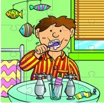
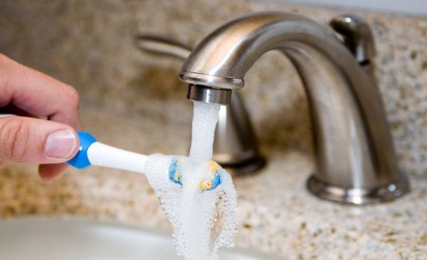

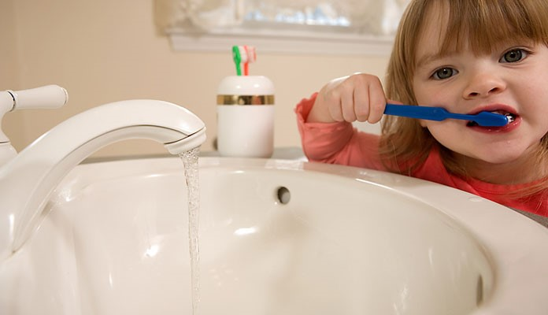

4-موقع شامپو و چنگ زدن موهای سر در هنگام استحمام، شیر آب را ببندید.

5-سعی کنید مدت استحمامتان کوتاه باشد. سردوش حمام را با نوع جدید آن (سردوش کاهنده مصرف) تعویض کنید.


6-برای آب دادن به درختان، درختچه ها، بوته ها و گل ها از روشهای نوین آبیاری مانند آبیاری قطره ای صرفه جویی کننده آب استفاده کنید.


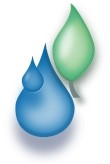
7-برای دوش گرفتن در حمام، زمان بگیرید و آنرا به کمتر از ۵ دقیقه برسانید، چون در این صورت ماهیانه حدود ۴۰۰۰ لیتر آب صرفه جویی خواهد شد.
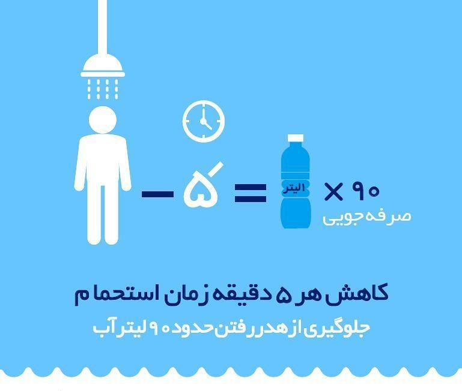
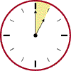
8-بهتر است برای شستن سبزیجات ابتدا آنها را در ظرفی بخیسانید و سپس آب بکشید.


9-از جریان آب به منظور آب شدن یخ گوشت یا دیگر مواد غذایی منجمد استفاده نکنید؛ و برای آب شدن یخ مواد خوراکی منجمد، انرا در هوای آزاد قرار دهید.
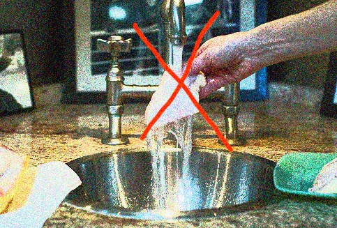

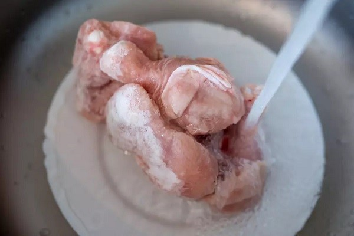
10-فرزندانتان را در مورد نیاز به حفاظت از آب آگاه سازید. از خرید اسباب بازیها و سرگرمیهایی که به جریان ثابت آب نیاز دارند، اجتناب کنید.

11-هنگام استفاده از دستشویی شیر آب را بطور مداوم باز نگذارید چون جریان دائم آب موجب اتلاف آن می شود.
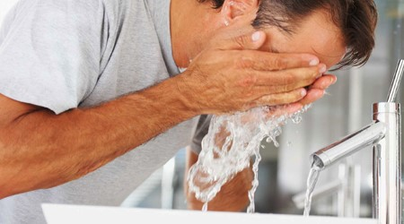


12-اگر دوش حمام شما بتواند در طی کمتر از ۲۰ ثانیه یک ظرف چهارلیتری را پر از آب کند در آنصورت حتماً آنرا با یک سر دوش کاهنده مصرف تعویض نمایید.
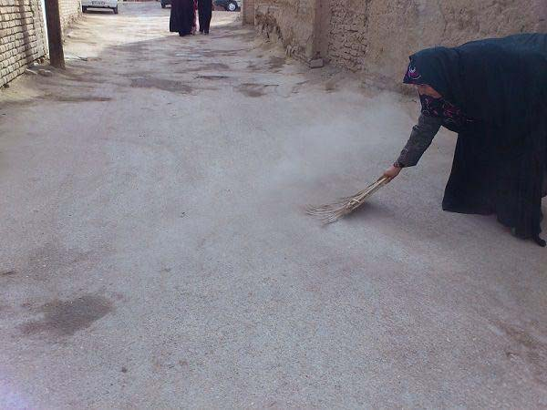
13-برای نظافت حیاط ،کوچه و پیاده رو بجای مصرف آب، بهتر است از جاروب استفاده شود.

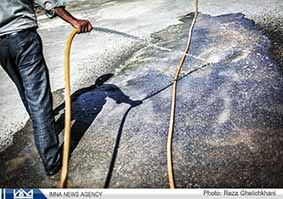
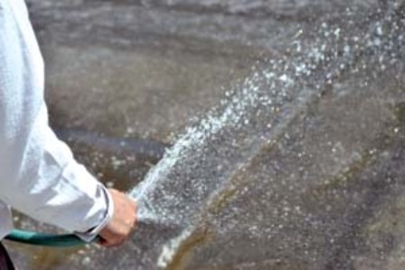

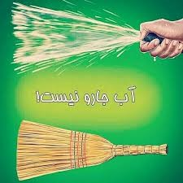
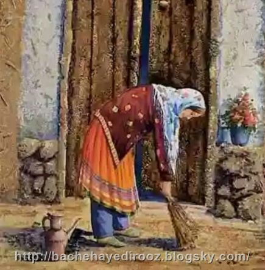
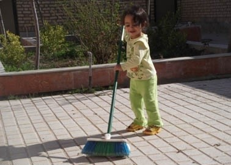
14-هر گونه اتلاف قابل توجه آب را (شکستگی لوله ها، باز بودن لوله ها، هدر روی آب در هر نقطه) به مرکز ارتباطات مردمی آب و فاضلاب اصفهان(تلفن ۱۲۲) اطلاع دهید.
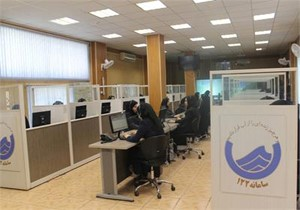
15-تمام شیلنگها، اتصالات و شیرها را بطور مرتب کنترل کنید تا از نشتی آب جلوگیری شود.
16-ضروری است برای اطمینان از سلامت لوله ها و شیرهای آب؛ آنها مرتبا کنترل شوند.
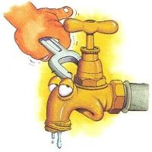
17-در مواقع جایگزینی یا افزودن گل و گیاه در باغچه خانه، گیاهی را انتخاب کنید که آب کمتری را مصرف کند. به این طریق سالیانه تا ۲۲۰۰ لیتر آب برای هر گیاه قابل صرفه جویی خواهد بود.
مانند سوفورا- ارغوان - بنه (پسته وحشی)- افرا کوهی (کیکم) - زبان گنجشک - اله آگنوس - باران طلایی - اقاقیا
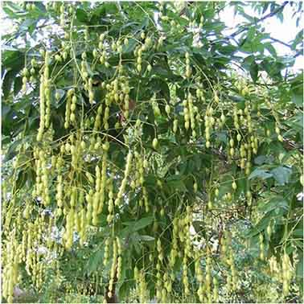
18-از نصب سیستم های آب تزیینی (مثل فواره ها) اجتناب کنید. مگر اینکه آب در سیستم بازیافت شود. همچنین سیستم را درجایی نصب کنید که تلفات کمی در اثر تبخیر و باد داشته باشیم.

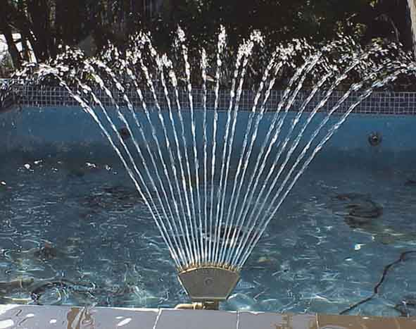
19-لوله های آب منزلتان را عایق بندی کنید، عایق کاری لوله های گرم، روشی است که هدر رفتن آب را قبل از خروج آب گرم کاهش می دهد.
20-لوله های آب گرم را عایق بندی کنید تا برای رسیدن آب گرم به شیر آب لازم نباشد آنرا بی جهت باز بگذارید.
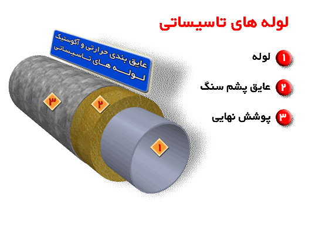
21-هرگز آبی را که می توان به مصارفی نظیر آبیاری و یا شستشو رسانید، فاضلاب حساب نکنید.
22-یک بطری پر از آب یا یک کیسه نایلونی پر از شن و کاملاً در بسته را در مخزن آب توالت فرنگی و یا فلاش تانک قرار دهید تا مصرف آب را در هر بار کشیدن فلاش تانک کاهش دهید. (لازم است این وسایل را در جایی از مخزن قرار دهید که با کار وسایل و اجزای عمل کننده درون مخزن تداخل نداشته باشد). در صورت امکان فلاش تانک پر مصرف خود را بافلاش تانک کاهنده دوزمانه (دو دکمه ای) جایگزین کنید.

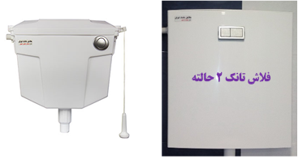

23-آب خنک مورد مصرفتان را همواره در یخچال نگهدارید تا هر گاه که یک لیوان آب خنک می خواهید، مجبور نباشید شیر آب را برای مدتی باز بگذارید تا آب خنک شود.
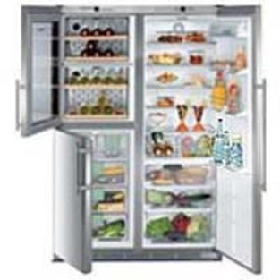
24-برای نوشیدن آب به جای آنکه شیر آب را به مدت زیادی باز بگذارید، بهتر است ابتدا چند قطعه یخ در لیوان قرار دهید و سپس شیر آب را باز کنید.

25-به کودکان آموزش دهیم تا با بستن به موقع شیر، آب را هدر ندهند.

26-می توان از آبی که برای شستن سبزیها و دست و صورت استفاده می شود به وسیله لوله کشی آنرا به سمت فلاش تانک هدایت کرد تا از آن به عنوان فلاش تانک در توالت استفاده شود.
27-نشت احتمالی فلاش تانک توالت را با افزودن مواد رنگی به آب آن بیابید. اگر فلاش تانک دارای نشت باشد، ماده رنگی ظرف مدت ۳۰ ثانیه از محل نشت پدیدار می شود. به محض اینکه آزمایش انجام شد، فلاش تانک را بکشید چون ممکن است ماده رنگی به مخزن آب آن آسیب برساند. فلاش تانکهایی که نشتی دارند آب را به داخل کاسه توالت هدر می دهند.
28-به جای شستن اتومبیل با شیلنگ آب، از یک سطل آب هم می توان استفاده کرد.

29-در حالی که کمبود آب در شهر احساس می شود لزومی به شستشوی پیاده روی مقابل مغازه و منزل نیست.
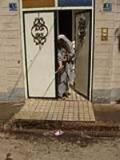
30-هنگام احداث ساختمان از کارگران ساختمانی بخواهید از آب تصفیه شده استفاده نکنند.

31-زمانی که سرگرم آب دادن باغچه و گلهای منزل هستید با شنیدن صدای زنگ تلفن یا زنگ در، بهتر است ابتدا شیر آب را ببندید وبعد به آنها پاسخ دهید.

32-ماشین لباسشویی معمولا مقدار زیادی آب مصرف می کنند بنابراین اگر از تعداد دفعات کاربرد ماشین لباسشویی بکاهید عملا در مصرف آب صرقه جویی کرده اید
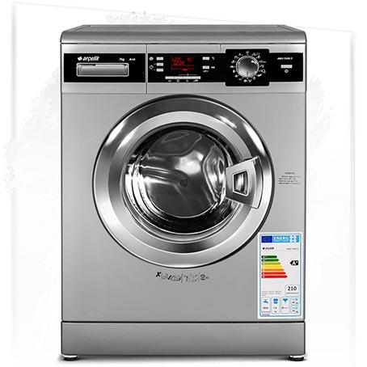
33-زمانی که به مسافرت می روید، ضروری است شیر فلکه بعد از کنتور آب را ببندید.تا از وقوع هر گونه حادثه پیشگیری شود.
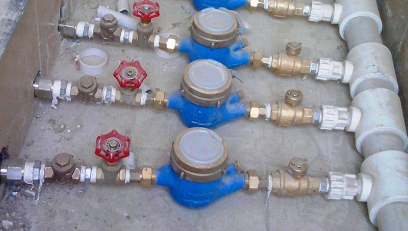
34-نیازی نیست که از میزان شست و شوی لباسها بکاهید بلکه فقط صبر کنید تا مقدار لباسهای کثیف باندازه ظرفیت کامل ماشین برسد

35-گروه های فرهنگی، غیردولتی را به ایجاد و ارتقاء فرهنگ حفاظت از آب در میان کودکان و بزرگسالان تشویق کنید.
36-تا حد امکان از آب شرب برای فضای سبز استفاده نشود. باغچه را در شب یا صبح زود آبیاری کنید تا از تبخیر آب جلوگیری شود.
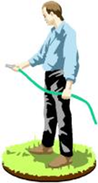
37-کارکرد کنتور در زمانی که همه شیرهای آب بسته است دلیل اتلاف یا نشتی آب از لوله های داخل ساختمان می باشد که در نتیجه : مقدار زیادی آب هدر رفته و هزینه گزاف آن را شما خواهید پرداخت
38-نصب کولر در سایه و با استفاده از پوشش مناسب و جلوگیری از نشت آب کولرهای آبی، باعث صرفه جویی زیادی در مصرف آب می شود.
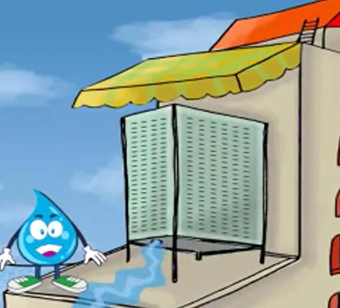
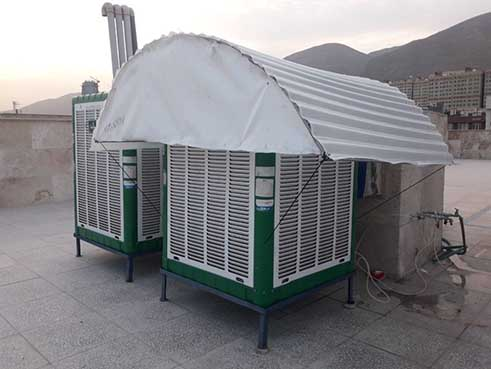
39-لازم است گاهی اوقات از لوله کشی ساختمان خود امتحانی به عمل آورید. توصیه می شود تمام شیرهای آب را ببندید و سپس کنتور را کنترل کنید.

40-در باغچه خانه، درختان، بوته ها و چمن های بومی و مقاوم به خشکی که به آب کمتری نیاز دارند و تحمل ماههای گرم تابستان را دارند؛ بکارید. این گونه ها هنگام کاشت، نیازی به آبیاری مرتب ندارند و معمولاً یک دوره خشکی را بدون آبیاری، به خوبی تحمل می کنند در یک منطقه گیاهانی را در کنار هم بکارید که نیازی مشابه داشته باشند. بهتر است از روش آبیاری قطره ای استفاده شود. از کاشت گیاهانی مانند چمن و شمشاد که هر روز نیاز به آبیاری فراوان دارند؛ خودداری کنیم.
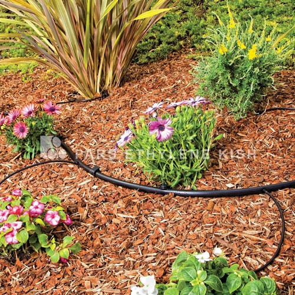